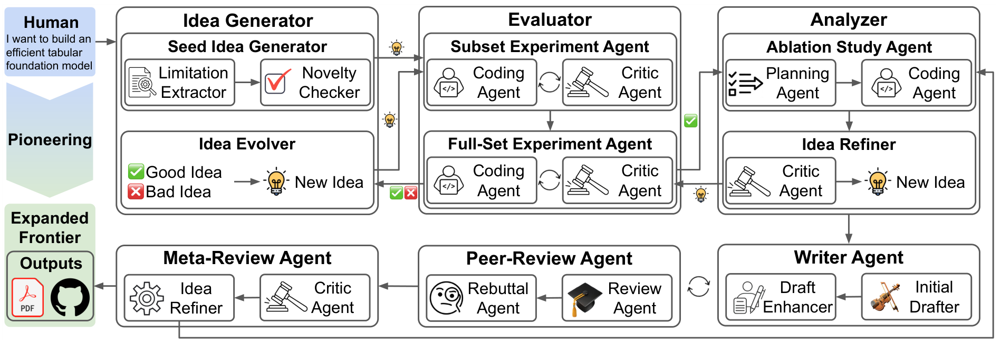
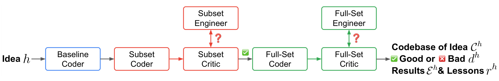
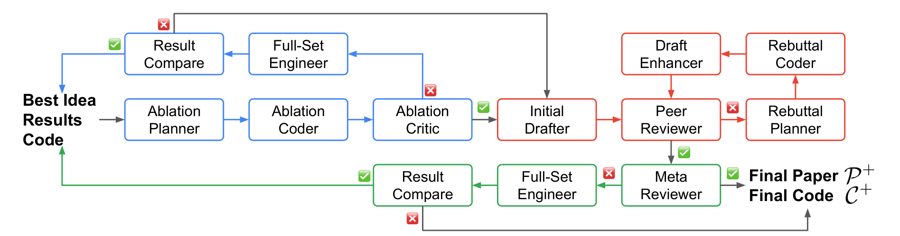
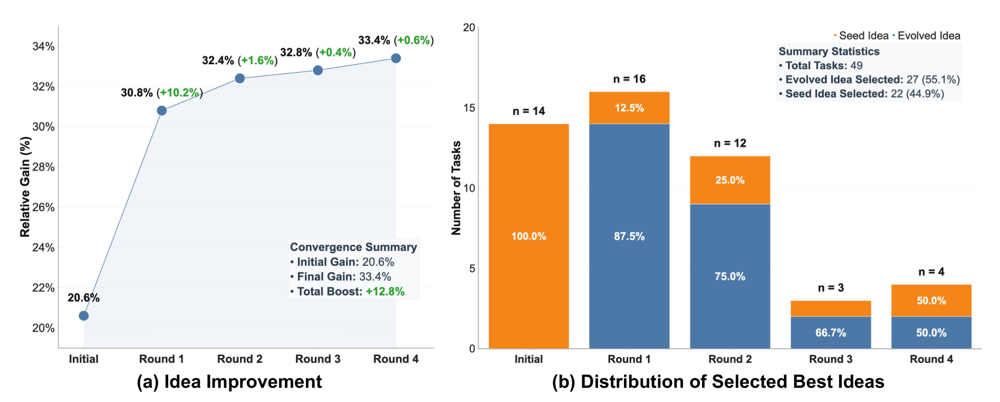

In research, proposing an idea is only a beginning. The harder work is deciding whether it is worth testing, examining it experimentally, and choosing what to do when results disappoint. This article follows that process to understand an autonomous research system and the evidence supporting its design.
1. Background: what autonomous research must accomplish
Suppose we want to improve a predictive model. We read related work, identify an unresolved difficulty, propose a solution, implement it, and compare results. If performance is poor, we investigate why; if it improves, we still need to explain the source of the gain.
Autonomous research asks whether AI can organize these activities and adjust its next action in response to new evidence. This involves both execution and judgment. An execution error may require a code fix, while evidence against a hypothesis may require a new research direction.
The challenge can therefore be organized around three abilities: finding worthwhile ideas, building evidence for conclusions, and using feedback to continue research. A system should be evaluated on each ability separately.
2. Related work: how earlier approaches progressed
Earlier work organizes research automation from different perspectives. Three directions help locate this paper.
| Work | Main focus | Question it leaves us |
|---|---|---|
| AI Scientist-v2 | Connects hypotheses, experiments, analysis, and writing through experimental tree search | How should a system choose which experimental branch to pursue? |
| AutoSOTA | Starts from existing papers and organizes replication, evaluation, and iterative optimization | How can an idea become a working improvement? |
| ScientistOne | Uses evidence chains to check scores, references, task rules, and agreement between methods and code | How do research conclusions connect to actual artifacts? |
ScientistTwo emphasizes the connections between these activities: developing ideas from experimental records, examining contributions through ablations, and translating simulated review into additional experiments and method changes. We focus on how that feedback changes the research process.
3. Research questions: what the paper aims to address
For readability, we organize the paper’s goals into three questions. This is our reading framework, rather than a verbatim list from the authors.
- How can promising ideas be found and improved? Candidate approaches must be screened under a finite budget, and both success and failure should inform the next round.
- How can performance gains be explained and verified? Ablations must examine component contributions, while results, descriptions, and actual code must agree.
- How can review feedback advance research? Criticism must become executable experiments or method changes whose usefulness can subsequently be checked.
These questions guide the method discussion and the three groups of experimental evidence below. The paper mainly studies improvements within tasks established by existing machine-learning papers, which bounds how its capabilities should be interpreted.
4. Method: following the research workflow
Start with the overview. Its upper half moves from idea generation to experiments and ablations; its lower half covers writing, review, and further revision. The agents are AI units responsible for particular activities.

Step 1: propose ideas around specific limitations
The system extracts limitations of existing methods, generates candidate approaches around them, and checks novelty. The crucial relationship is between a problem and its proposed solution: every idea should target a difficulty it hopes to improve.
For example, if a method is unstable on noisy inputs, a candidate should explain how it intends to handle noise. That explanation begins as a hypothesis and is then tested experimentally.
Step 2: screen candidates, then develop ideas from experimental records
Candidates are tested on a benchmark subset and compared with reproduced reference results. Clearly ineffective approaches are discarded. Promising candidates that still need adjustment undergo engineering changes, while strong candidates proceed to the full benchmark.

The system retains ideas, code, results, and evaluations to generate improved candidates, while continuing to explore untested initial ideas. This allows deeper exploration of promising directions without eliminating alternatives. Together, these steps address the first research question.
Step 3: use ablations to examine where gains come from
After selecting a candidate, the system designs and runs ablations—for example, removing a component and observing the effect—then adjusts the method. This addresses the second question: improvement requires an explanation.
Ablation results also have conditions. A performance drop after removing a component supports its contribution in that setting; broader claims about mechanisms require additional experiments.
Step 4: turn review comments into experiments and revisions
The system writes up the method and results, then simulated reviewers raise concerns. Rebuttal can involve additional experiments and manuscript revisions. If higher-level review identifies a methodological weakness, the process returns to method changes and validation.

This addresses the third question: criticism must lead to new research actions. We care most about which experiments feedback triggers, which judgments it changes, and whether later evidence supports the revision.
The complete system also checks score reproducibility, task-rule violations, fabricated references, and agreement between the described method and code. See Section 3 of the paper.
5. Experiments and results: three groups of core evidence
We examine experiments through the three questions above. This discussion mainly uses Section 4.2’s analysis of 49 successful tasks derived from ICML 2026 Spotlight papers, keeping different statistical populations separate.
Question 1: can experimental records help improve ideas?
The authors track gains relative to reference methods and the origins of the best ideas during iteration.

The results support continued improvement through iteration on these tasks, with larger early gains. However, this process analysis combines additional attempts with feedback use; it does not isolate reading failed execution records as the cause of the entire gain.
Question 2: can research artifacts be verified?
Ablations examine component contributions; artifact audits examine whether papers match actual execution. Key results from original Table 7 are:
| Check | Complete system | Supported interpretation |
|---|---|---|
| Score reproduction | 49 / 49 pass | Reported results have support from re-execution |
| Task rules | 0 / 49 violations | The audit detected no corresponding rule violations |
| Fabricated references | 0 / 1,814 | The audit detected no fabricated references |
| Method–code agreement | 49 / 49 pass | Manuscript descriptions agree with implementations |
Source: original Table 7, PDF p. 14. This table evaluates artifact integrity, rather than scientific novelty directly.
In the same table, removing method–code consistency revision yields 38 / 49 passes; including it yields 49 / 49. Explicitly checking descriptions against implementations therefore has practical value. Nevertheless, whether a reference exists and whether it adequately supports a claim remain separate questions.
Question 3: can simulated review improve research?
The authors compare outputs across review rounds using ScholarPeer, which participates in revision, and Stanford Agentic Reviewer, which was held out during development.
| Review rounds | ScholarPeer mean rating | Stanford mean rating | Stanford acceptance rate |
|---|---|---|---|
| 0 | 5.2 | 5.6 | 49.0% |
| 1 | 6.9 | 5.8 | 73.5% |
| 2 | 7.6 | 5.7 | 69.4% |
Source: original Table 5, 49 ICML-derived tasks. Ratings use a 1–10 scale. Acceptance rates are AI-review judgments, not actual conference decisions.
Both evaluations improve after the first round. In round two, the internal rating rises further while the other reviewer’s acceptance rate declines. Our interpretation is that the first round demonstrates value, but further revision needs independent checks. These aggregates do not establish why acceptance falls, nor can all gains be attributed to feedback content, since supplementary experiments also increase computation.
See the experimental figures and tables on PDF pp. 13–14.
6. Our reflections
Understanding the field: what is being studied?
Autonomous research studies how AI can organize a complete research process: identifying worthwhile problems, proposing hypotheses, executing experiments, and adjusting direction based on evidence. We see judgment about the next action as particularly important. Running code, improving scores, and completing a manuscript should all be evaluated within that process.
Remaining limitations: which problems are unresolved?
- Problem discovery: Improving an existing task is still different from independently finding a valuable new problem. Evaluating the value of a research question remains open.
- Feedback reliability: Higher internal review scores do not necessarily imply better independent evaluations. Research improvement must be distinguished from adaptation to reviewer preferences.
- Resource allocation: Repeated experiments increase expenditure. Under limited budgets, deciding when to pursue, switch, or stop a direction still needs a basis.
Possible solutions: which directions are worth exploring?
The following directions correspond to those three limitations.
- Make problem discovery testable: Connect proposed problems to literature gaps, practical needs, and executable experiments, then ask domain researchers to assess their value.
- Retain independent checks on feedback: Save versions from each round, use blinded assessment and similar-budget controls, and examine what valid new evidence each revision adds.
- Allocate budgets using experimental information: Record failure causes and marginal gains; investigate when to continue validation, switch direction, or stop, comparing research outputs at equal cost.
Based on ScientistTwo arXiv v1. Figures belong to Jaehyun Nam et al. and are reproduced under CC BY 4.0; only surrounding page material was cropped. Tables excerpt core results from the paper. Interpretations and proposed follow-up experiments are our analysis.